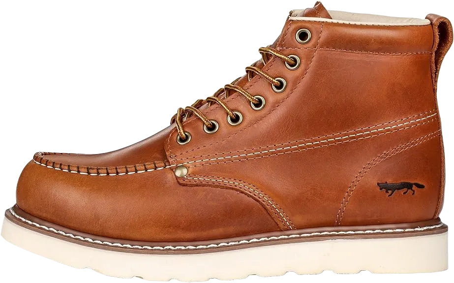
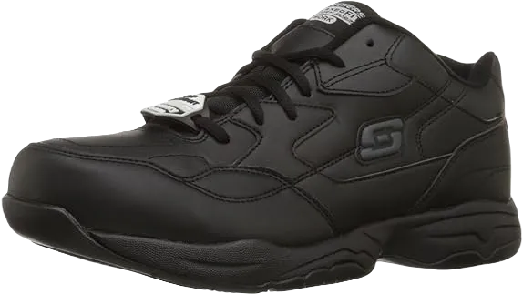
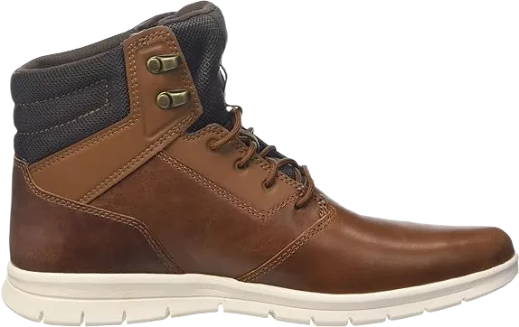
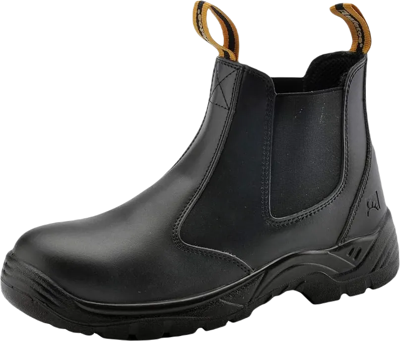

Top 8 Best Work Shoes for Electrician In 2024
As an electrician, you're well aware that accidents are an inherent part of the job. Whether it's dealing with inadequate cables, exposed components, or wet working conditions, numerous potential hazards can arise in your line of work. Proper attire, including the right footwear, is essential for ensuring safety and getting the job done effectively.
The best electric boots take these risks into account, as they are specifically designed for the unique challenges electricians face. If you're unsure about which lightweight boots to purchase, don't worry! Below, we have compiled a list of eight excellent options currently available on the market.
-
#1
Dr. Martens – guy’s Thumbnail 2295
.webp)
Who hasn't heard of Dr. Martens? You don’t need to be an electrician or a shoe expert to recognize this iconic brand, which has been crafting footwear for over seven decades. Renowned for their durability, functionality, and style, Dr. Martens shoes are a popular choice. But as an electrician, can you really rely on these shoes for your work? The answer is a resounding yes, thanks to the many impressive features they offer. They check all the boxes for a quality electrical boot, starting with robust construction, which is essential for safety in the electrical workplace.
In addition to sturdy design, these boots come equipped with a durable toe cap to further reduce the risk of accidental electrical shock. They are also designed with slip-resistant soles, ensuring your safety even in wet work environments.
Overall, Dr. Martens provides a combination of style and safety that electricians can count on, making them a fantastic option for anyone in the field. -
#2
Rhino 6 inch Metatarsal paintings Boot
If you're on a budget and looking for reliable electric work boots, the Rhino work boots are a great option. Crafted from leather and featuring rubber soles, these boots are ideal for electricians in search of stylish footwear for the first time.
One of the standout features of these boots is their soft insoles, which provide excellent comfort during long hours on the job. While some users have noted that the boots may feel a bit snug initially, it's common for shoes to require some time to break in and fit comfortably.
For those experienced in selecting work boots, these may seem a bit unconventional in certain aspects. However, they offer plenty to appreciate, including an oil-resistant exterior and heat-resistant properties. Overall, we believe these boots provide impressive quality, especially given their affordable price point. -
#3
Timberland seasoned Men’s
.webp)
Let's talk about a brand that has firmly established its dominance in the market with sustainable and durable footwear: Timberland. If you haven't heard of them yet, it’s time to come out from under that rock!
Constructed from high-quality leather and equipped with a robust rubber sole, the craftsmanship of these boots indicates they are designed for heavy-duty use. The Ever Guard leather surface ensures resistance to water and moisture, while the Goodyear welt construction enhances durability you can depend on.
These boots wouldn't earn a spot on our list without offering electrical resistance. They come equipped with Timberland’s Met Guard steel toes, providing not only protection but also exceeding ASTM standards. This means they will keep you safe from compression and metatarsal impacts, making them a reliable choice for any electrician. -
#4
Timberland pro men’s 53522
.webp)
Our next selection also comes from Timberland, known for being one of the most popular choices among electricians for several reasons. These boots are designed to deliver reliable performance in various workplaces, and they excel as an electric work boot.
Choosing Timberland boots guarantees you won’t compromise on quality, and this particular pair exemplifies that. They are equipped with durable Ever-Proof leather, which is said to be ten times stronger than other types of leather, showcasing its tested resilience.
Your safety while working is paramount, and this is a product you can always count on. These boots feature steel toes to protect you from hazardous compression and impact in the electrical work environment, ensuring your peace of mind on the job. -
#5
IKENEN utility men’s Davenport 6
Our next entry on the list of highly rated electric work boots is packed with essential features and more. Constructed from durable synthetic materials and robust rubber, this boot meets or exceeds ASTM electrical hazard standards.
First, let's highlight the toe, which is made from composite materials instead of steel or any other type of metal. This design is favored by those who find steel toes too heavy or uncomfortable during prolonged use.
Regarding electrical hazards, these boots are designed with oil-resistant materials, so you won't have to worry about slips while on the job. Additionally, the waterproof membrane keeps your feet dry, while the rubber outsoles prevent slippage, with glass fibers on the sole contributing to a cleat-like effect. In short, you can rely on these boots for dependable performance. -
#6
Caterpillar men’s 2d Shift metallic
.webp)
CAT is widely recognized as a leading manufacturer of construction machinery, with its iconic yellow logo being a familiar sight around the globe. The company has established itself as a vital player in the construction industry, so it was only a matter of time before they ventured into producing durable, stylish boots like these.
These boots are crafted from nubuck leather (or grain-filled leather for certain models) and meet ASTM F2413-18 1 / 75EH standards. This electrical hazard rating ensures protection against up to 14,000 volts per minute, keeping you safe on the job.
The boot’s design is equally impressive. It features a strong, durable steel toe that helps guard against pressure and impact. Additionally, the Goodyear Welt construction enhances the overall stability, durability, and flexibility of the boot, making it a reliable choice for demanding work environments. -
#7
Timberland guy’s Grid
If you haven't noticed, we have a strong preference for Timberland products here. If our previous review didn't convince you of our enthusiasm, this comparison should clarify why we appreciate them so much.
These boots are undoubtedly among the toughest work boots on the market. It's essential to point out from the start that they may be a bit on the heavier side; however, once you hear about their features, it will be clear why.
Let’s begin with the overall stability and comfort these boots provide, primarily due to the fiberglass shank. Additionally, when combined with advanced anti-fatigue technology, these boots are designed with TPU outer surfaces that can endure all kinds of weather conditions. -
#8
SAFETOE Mens protection Boots
Take a look at the latest price for the final boots on our list, designed for those seeking reliable electric boots without straining their budget. Safe Toe proves that you don’t have to spend a fortune to find a quality pair.
Constructed entirely from genuine cowhide, these boots offer durability and comfort that you can count on.
Their design ensures that you get excellent protection while maintaining a classic look, making them a great option for any electrician looking for dependable footwear.